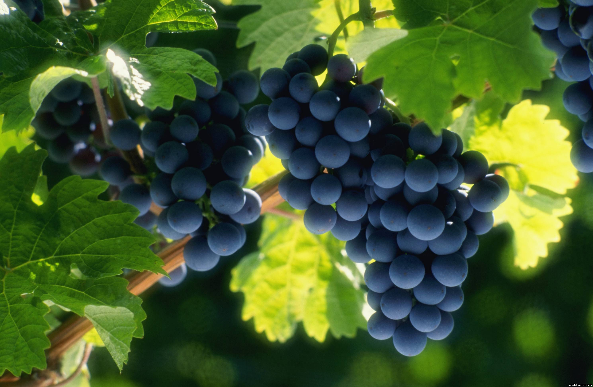

Каталог
16 СОВЕТОВ ПО ВЫРАЩИВАНИЮ ВИНОГРАДА

1. Место посадки. Оно должно быть солнечным и защищенным от ветра, например, у южной стены дома, сарая или у ограды, обращенной к югу, с хорошо дренированной почвой.
2. При наличии на участке минимального уклона сажайте виноград на пологом южном или юго-западном склоне, ориентируя ряд по направлению "юг - север". Если участок ровный, а южные стены заняты, создайте место для своего винограда, построив в любом удобном месте участка симпатичный сплошной забор высотой 1,8-2 м, ориентированный по линии "восток - запад".
3. Способ посадки винограда зависит от типа почвы. Возможны варианты, но обычно на песчаных почвах виноград рекомендуется сажать в траншеи, а на плохо прогреваемых суглинках и глинах и в районах с близким залеганием грунтовых вод рекомендуется посадка на гряды, которые в старину называли "творила".
4. Не торопитесь с высадкой саженцев "на ПМЖ", особенно если эти сорта на испытании. Пусть поживут до первых сигнальных кистей в школке (где укрывать легче). Некоторые виноградари-северяне в первый год вообще не высаживают саженцы в открытый грунт, а держат их там в мобильных емкостях (например, в ведрах), наполовину закопанных в землю. Осенью емкости с саженцами перемещают в подвал, а поздней весной высаживают. Такие саженцы вступают в плодоношение раньше.
5. Не сажайте лозы стихийно. Если кусты винограда у вас не в "точечной" посадке, планирование виноградной делянки необходимо. Группируйте сорта по назначению, так как интервал посадки у них разный. Расстояние между кустами сортов соко-винного назначения 0,8 м, столовых сортов - не менее 1,5 м, между рядами - 2-2,5 м. Желательно уточнять силу роста выбранных сортов, чтобы правильно рассчитать нужное место. Группировка сортов по срокам созревания и по морозостойкости облегчит уход за виноградом. Не нужно будет опрыскивать и укрывать все по максимуму.
6. Не сажайте привитые саженцы (из европейских и южных питомников) вертикально, а размещайте их практически лежа под максимально возможным углом, иначе будут проблемы с вызреванием лозы. Постепенно переводите их на собственные корни.
7. Не забывайте, что виноград обладает свойством вертикальной полярности. При раскрытии подвязывайте плодоносную стрелку на шпалере или кольях только горизонтально - тогда все однолетние зеленые побеги будут расти одинаково. При вертикальной подвязке интенсивно растут побеги только из верхних глазков, а из нижних - слабо или не растут.
8. Ограничьте поливы. Обязателен только полив молодых лоз первые 2 года и общий для всех сортов влагозарядковый полив осенью. За 7-10 дней до ожидаемого цветения поливы прекратите, так как излишняя влага вызывает осыпание цвета и задерживает созревание урожая.
9. Не применяйте дождевания, иначе спровоцируете болезни. Устраивайте дренажные каналы и ставьте трубы для полива на обочине междурядья не ближе 30-50 см к основанию куста. Виноград не любит мокрых листьев и влажной поверхности земли. Если можно, устройте над виноградными кустами козырек.
10. Зеленые операции проводите щадяще и вовремя. Недопустимо одновременное удаление всех точек роста на побеге: и чеканка верхушки, и прищипка пасынков. Ведь есть опасность, что зимующие почки куста тронутся в рост и его потенциал резко ослабеет. Пасынки не выламывайте полностью, оставляйте 1-2 листа. Чеканку проводите в августе, сразу после распрямления коронки.
11. Обрезка винограду необходима, иначе ягоды измельчают, а куст излишне разрастется. Но в год посадки никакой обрезки, кроме удаления осенью невызревших зеленых частей побегов. С 3-го года обрезайте побеги согласно рекомендациям (короткая или длинная обрезка), но не следуйте бездумно рекомендуемой общей нагрузке, так как ваши условия - рельеф, почва, сумма активных температур (САТ) - ее скорректируют. Записывайте, начиная с какой почки вырастают плодоносящие побеги конкретно у вас.
12. Не проводите осеннюю обрезку раньше естественного листопада или установления ночных отрицательных температур (начало ноября). Не проводите обрезку весной, так как "плач" лозы (истечение пасоки) ослабляет растение.
13. На севере надежнее применять бесштамбовые формировки веерного или полувеерного типа, а не высокоштамбовые, в том числе и для беседок.
14. Зимнее укрытие первые 2-3 года нужно всем саженцам. Первый год виноград растет подвязанным к временной шпалере. Осенью снимают побеги и укрывают двух-трехслойным воздушно-сухим укрытием. В качестве подстилки - лапник или доски, поверх саженцев - слой спанбонда или гофрокартона и сверху пленка (толь, старый линолеум). Остальное довершит снег. Оставьте в торцах укрытия щели для проветривания.
15. Не снимайте весной укрытие сразу и полностью. А когда сняли, оставьте рядом на случай возвратных заморозков пару слоев спанбонда. Фиксируйте сроки и особенности посадки, цветения, созревания, обрезки и нагрузки винограда в дневнике. Иначе забудется и пропадет ценнейшая информация для анализа по сортоиспытанию. А она так нужна и вам, и следующему поколению северных виноградарей, которое обязательно придет вслед за вами.
16. Новичкам советуем вкусные и неприхотливые столовые сорта 'Агат Донской' , 'Алешенькин', 'Юбилейный Новгорода', универсальные 'Платовский', 'Кристалл', ультраранний столовый 'Краса Никополя'. Тем, у кого есть дети, следует обратить внимание на суперранние и нежно-сладкие сорта 'Лиепайский Янтарь' и 'Ранний Циравский', а также на сорт 'Краса Севера' с повышенным содержанием полезной фолиевой кислоты. Из перечисленных сортов винограда выберите для первой посадки не более четырех-пяти.